Student Workflow
Step 1: Logging In
After logging in, you see the Navigator - your home page. Activities assigned by your instructor appear here.
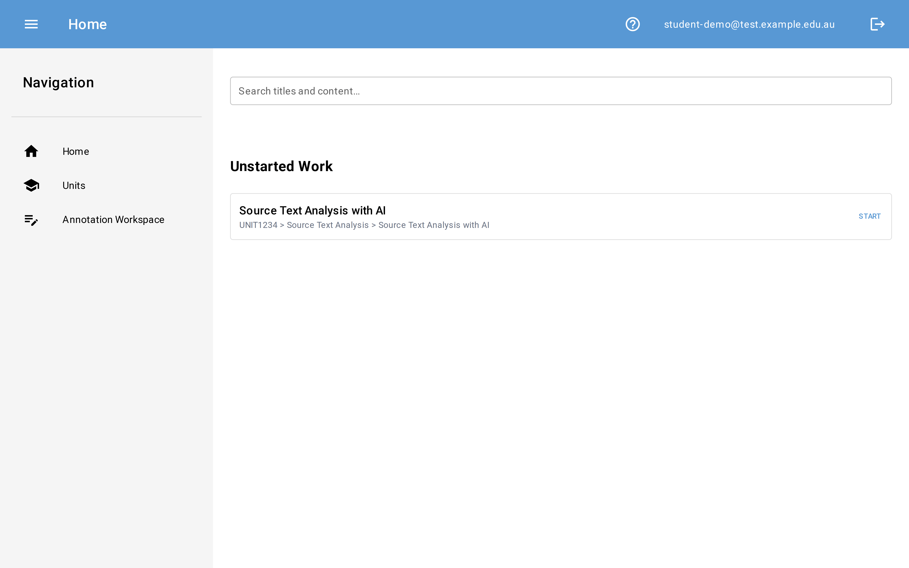
Step 2: Finding Your Activity
The Navigator shows activities available to you. Find the activity your instructor created.
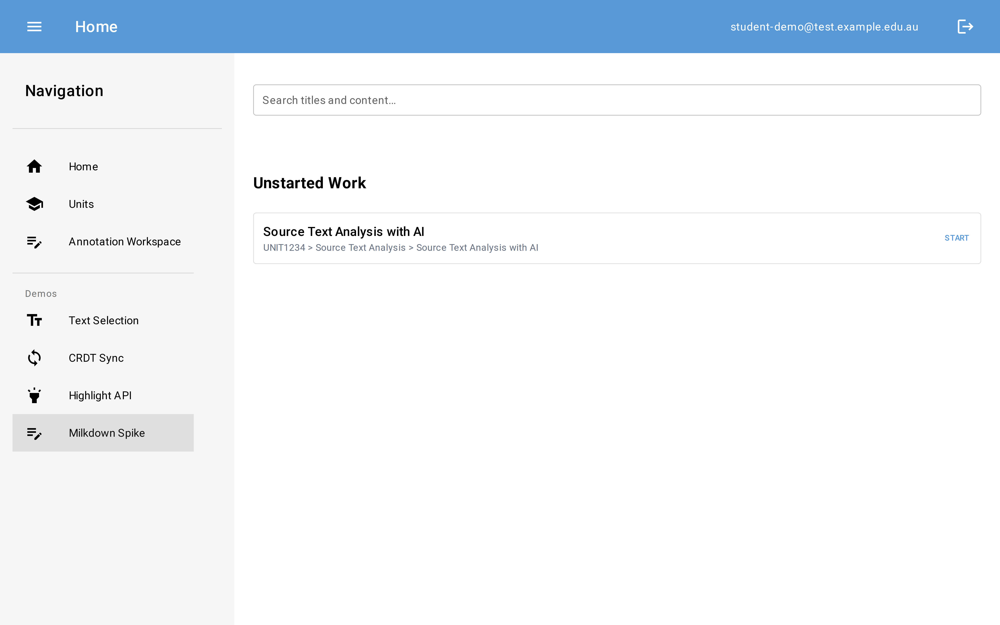
You can see the unit and activity on your Navigator.
Step 3: Creating a Workspace
Click Start on the activity to create your workspace. The workspace inherits the tag configuration set by your instructor.
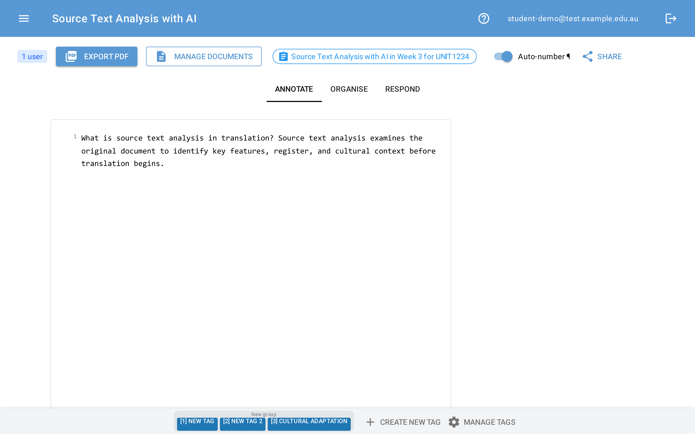
Your workspace is created. You are now on the annotation page with three tabs: Annotate, Organise, and Respond.
Step 4: Pasting Your AI Conversation
Copy your AI conversation from ChatGPT, Claude, or another tool. Then paste it into the editor.
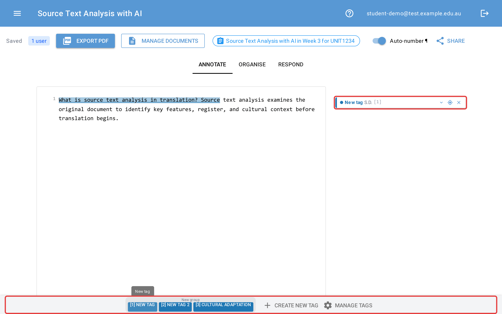
Paste your AI conversation into the editor. PromptGrimoire accepts content from ChatGPT, Claude, and other tools.
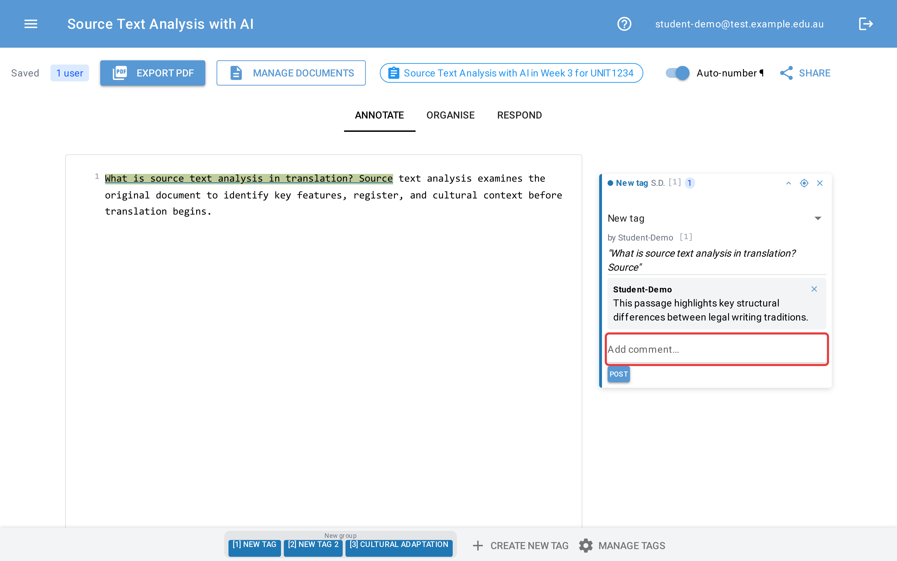
PromptGrimoire detects the content type. Confirm the detected type or change it, then click Confirm.
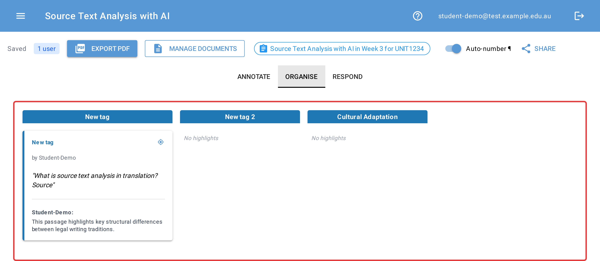
Your conversation is now processed and displayed with formatted turns.
Step 5: Annotating - Creating a Highlight
Select text in the conversation to highlight it. A tag menu appears so you can categorise the highlight.
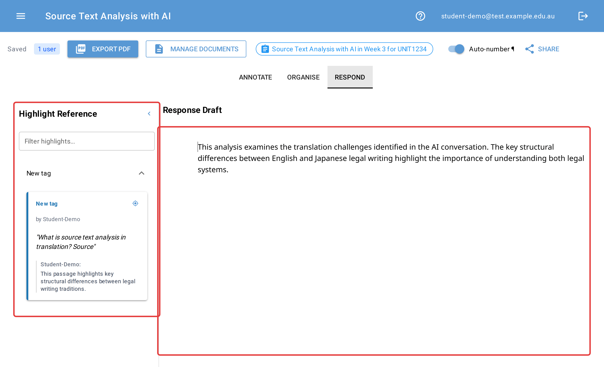
Select text and click a tag in the popup menu to create a highlight. The text is colour-coded by tag.
Step 6: Adding a Comment
Click on a highlighted section to select it, then type a comment in the sidebar.
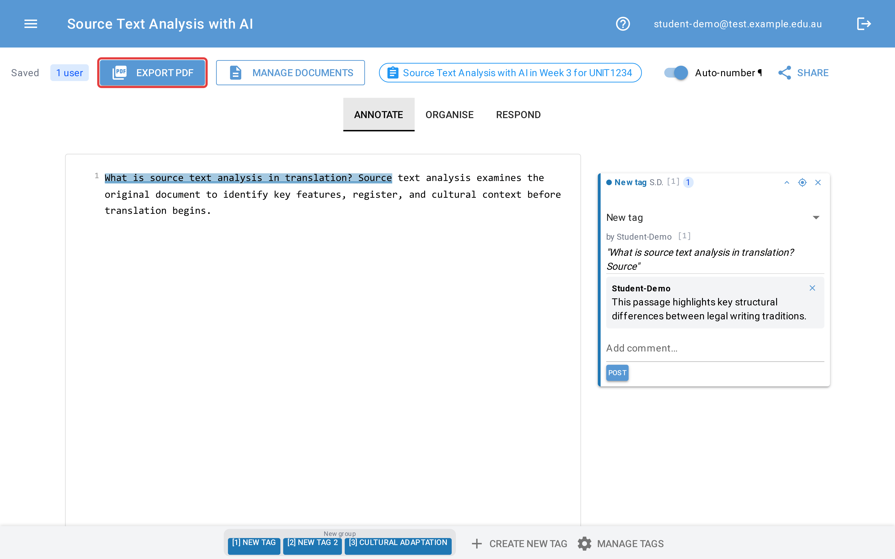
Comments appear below each highlight in the sidebar. Use comments to record your analysis.
Step 7: Organising by Tag
Switch to the Organise tab to view your annotations grouped by tag.
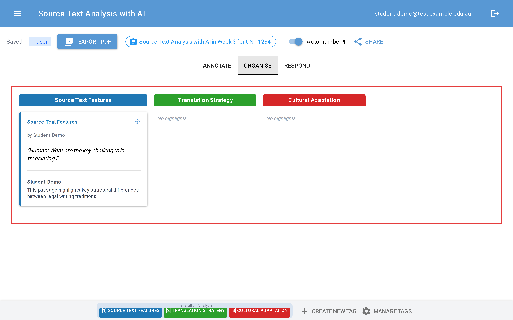
The Organise tab shows your highlights in columns by tag. You can drag highlights between columns to reclassify them.
Step 8: Writing Your Response
Switch to the Respond tab to write your analysis. Your highlights appear in the reference panel on the right.
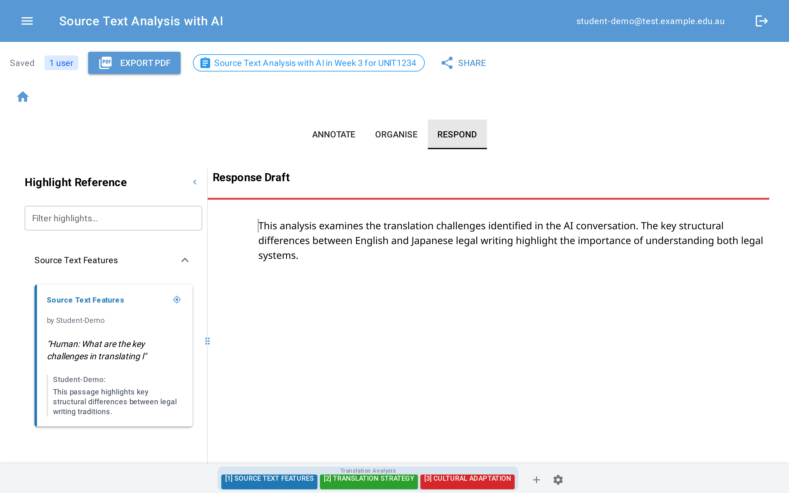
The Respond tab has a markdown editor on the left and your highlights as reference on the right. Write your analysis using the highlights as evidence.
Step 9: Exporting to PDF
Click Export PDF to generate a PDF of your complete annotation work.
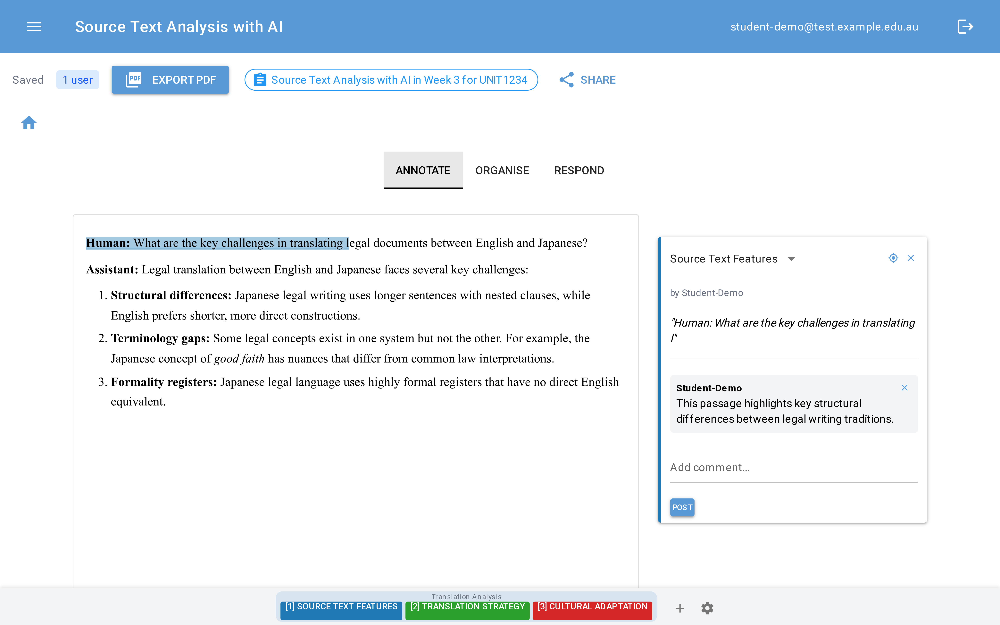
The exported PDF includes your pasted conversation with highlights, comments, organised notes, and your written response.